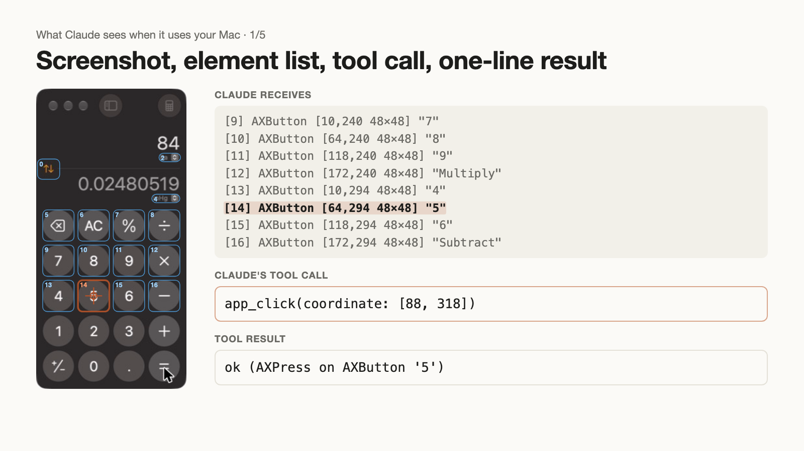
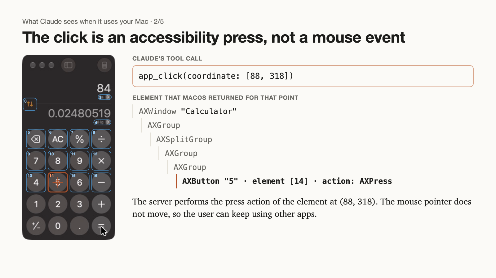
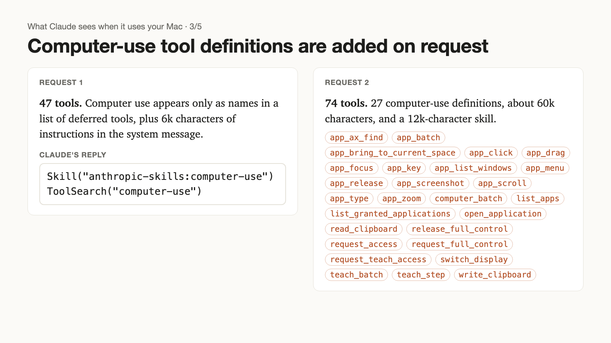
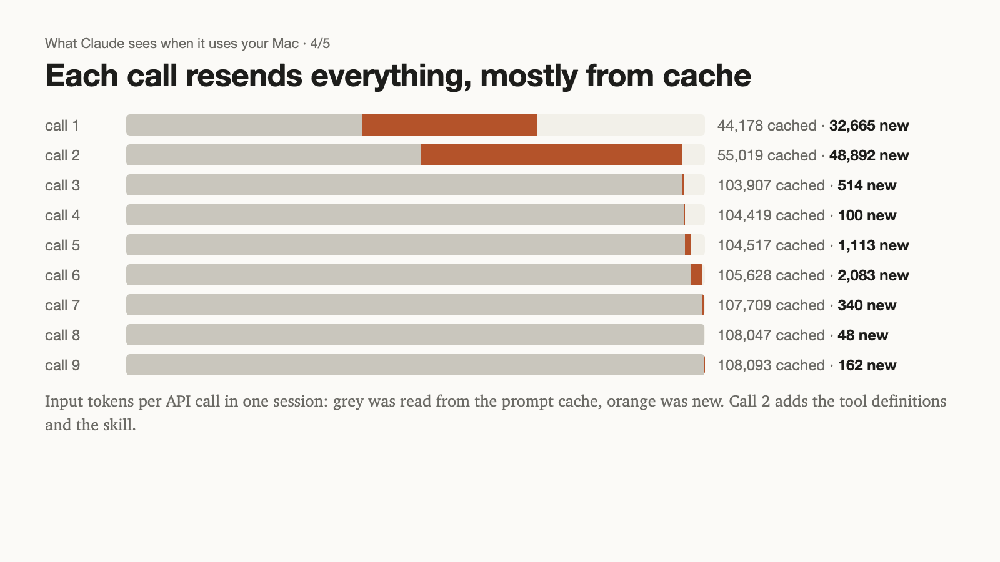
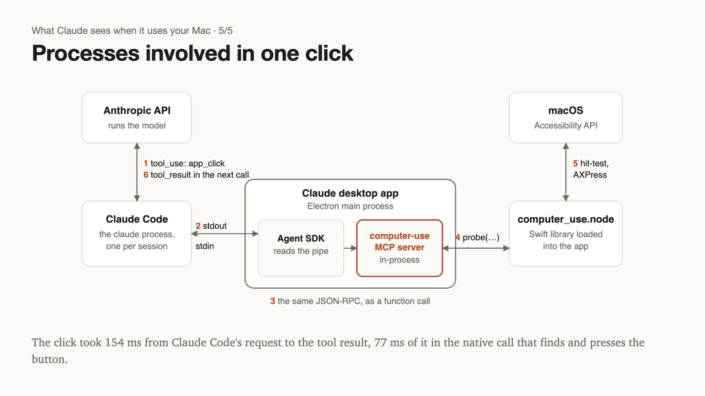

Thread draft
Five posts, one 1600×900 image each, built from the same logged session as the post. Character counts follow X's rule that a link counts as 23. Replace [link] with the post's address.
What does Claude receive when it uses your Mac? I logged every API request and inter-process message in one computer-use session in the Claude desktop app. Each step: a screenshot, a numbered list of clickable elements, and a one-line text result after each click. 🧵

Download imageThe list comes from the macOS accessibility API: each element's number, box and title. Claude sends a list number or a pixel coordinate, here (88, 318), the centre of element [14]. The server performs that element's press action; no mouse event is sent.

Download imageClaude doesn't have the computer-use tools at first. The first request lists only their names; Claude loads a skill and calls ToolSearch, and the next request has all 27 definitions (about 60k characters). All its instructions are text: system message, skill, tool docs, results.

Download imageEach call resends the whole conversation, including screenshots: about 105k tokens. From the third call on, over 98% of each request was read from the prompt cache, so each call added between a few dozen and about two thousand new tokens.

Download imageClaude Code talks to the desktop app over stdin/stdout, the computer-use MCP server runs inside the app's own process, and one native call finds and presses the button: 77 ms of the 154 ms the click took. Post, with every request in a viewer: [link]

Download image